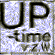
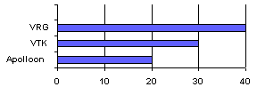
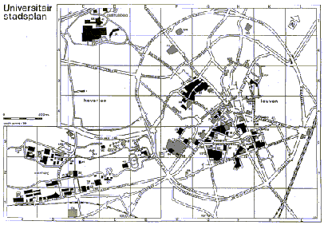

|

| Uptime v.z.w.
C.Verschaevelaan 12, 2980 Zoersel
tel. +32 3 384.10.89
fax. +32 3 385 15 94
|
Contactadres
Jan Govaerts
Blijde Inkomststraat 21, lokaal 1.17.
3000 Leuven
016/32.48.61 vragen naar Jan Govaerts of Kris Buytaert
fax. 016/29.80.46
Project Cyber-24urenloop
Uptime! i.s.m. Ulyssis en Sportraad heeft jullie
hulp nodig
Het sportevenement : de 24-urenloop
Vijfentwintig jaar geleden werd de 24-urenloop voor
de eerste keer door de sportraad van de Katholieke Universiteit
Leuven georganiseerd. Nu is het sportevenement uitgegroeid tot
de grootste manifestatie met niet minder dan 15.000 deelnemers
en toeschouwers. Omtrent 30 ploegen, bestaande uit verschillende
studierichtingen, studentenhome's en verenigingen, lopen 24 uur
lang estafette rond het sportveld van het sportkot te Leuven.
De ploeg die het meeste rondjes kan afleggen in deze periode mag
zichzelf overwinnaar noemen. Daarnaast zijn er verschillende extra-sportieve
nevenactiviteiten met drank, eten en dit jaar ook een heus Cyber-event
georganiseerd door Uptime!.
Wie organiseert Cyber-24urenloop?
Wij zijn enkele informatica-lievende mensen, die
zich tot doel hebben gesteld het internet en informatica te promoten.
Dit trachten we te bewerkstelligen via netwerkevenementen zoals
de 24-urenloop. Het sportevenement zelf ligt in handen van Sportraad,
de studentenorganisatie van de K.U.-Leuven.
Het online sportevenement
Deze 25ste verjaardag van de 24urenloop zal dit jaar
volledig op het internet te volgen zijn. In het onderstaande overzicht
van modules staat de ganse opzet van het project uiteengezet.
Voorstelling Cyber-24 urenloop
Minimum-configuratie
- Uptime! wil in de eerste plaats aanwezig zijn
op de vierentwintigurenloop, niet als ploeg, maar met een Cybercafé.
Dit zal plaatsvinden rond het parcours van het evenement.
Het is de bedoeling dat er 30 PC's met internetconnectie zullen
staan. Op deze PC's zal kunnen gesurft worden op het world wide
web. Behalve surfen zal er eventueel de mogelijkheid zijn om multi-user
games zoals Quake te spelen. Ook zal er op effnet of undernet
een irc-kanaal geopend worden.
Eerste uitbreiding : de 24 uren-website
- Rond het evenement wil Uptime! een website
bouwen. De inhoud van de site zal in overleg met sportraad
gestalte krijgen. De elementen die moeten voorkomen op de site
zijn : Geschiedenis, Deelnemers met eventueel links naar hun homepage,
nevenklassementen, een kaart met een beschrijving van het evenement,
voorstelling van de organisatie, live-interviews.
Tweede uitbreiding : Live resultaten
- Een deel van de hierboven beschreven website
zullen real-time uitslagen worden weergegeven. Deze resultaten
zullen i.t.t. vorige edities volledig automatisch gegenereerd
worden. Door gebruik te maken van zenders die worden ingewerkt
in de doorgeefstokken van alle deelnemende ploegen. Telkens zij
op een bepaald punt passeren langs het circuit zal er een rondje
worden toegevoegd bij hun totaal. Deze cijfers zullen live op
het internet gebracht worden door middel van de aangepaste software.
Zo kan men overal ter wereld bekijken hoe de strijd op de 24urenloop
evolueert. Deze resultaten kunnen eventueel mbv een projectie-systeem
(cf. Barco's in aula's) kunnen worden geprojecteerd op het terrein.
Het aantal ronden zal weergegeven worden en de gemiddelde duur
van één rondje. Behalve resultaten zullen er ook
live-interviews op het net te vinden zijn. Enkele 'journalisten'
zullen gewapend met een laptop en een digitale camera rond de
piste lopen om winnaars van nevenklassementen te interviewen.
Het ganse sportevenement zal live op het net gebracht worden met
live-beelden en geluid.

Waar gaat de 24-urenloop door?

Sponsering Cyber-24 urenloop
Benodigdheden
| Materiaal
| Kostprijs
| Natura
|
| Computers
| |
|
| 30 | Client-PC's
(multimedia, netwerk-connectie, operating system,
| 250.000 | Mac, Compaq, Toshiba, Kaiser, Sun (N.C.)
|
| 5 | Laptops
| 40.000 | Mac, Compaq, Toshiba, Kaiser, Sun (N.C.)
|
| 4 | Servers
| 40.000 | Digital, Compaq, Sun, HP
|
| Netwerkinfrastructuur
| |
|
| 4 | Hubs
| | Cisco, 3Com, Bausch, Indacom, Shiva, D-Link
|
| 1 | wireless connector
| | Cisco, 3Com, Bausch, Indacom, Shiva, D-Link
|
| 1.000 meter | Coax
| | Cisco, 3Com, Bausch, Indacom, Shiva, D-Link
|
| Randapparatuur
| |
|
| 6 | Cuseeme camera's
| | Kodak, Kaiser, Agfa
|
| 1 | Digitale camera's
| 5.000 | Kodak, Kaiser, Agfa
|
| Communicatie
| |
|
| 3 | Communicatie (GSM's)
| | Proximus, Mobistar, Nokia, Ericson
|
| software
| |
|
| 1 | Real-Audioserver
| 0 Bef. | www.real.com
|
| 1 | Real-Videoserver?
| |
|
| Projectiesysteem
| |
|
| 1 | Projectiescherm/videowall
| 200.000 Bef. | BPP, Civatel
|
| 1 | klein Projectiesysteem
| 50.000 Bef. |
|
| Behuizing & bekabeling
| |
|
| 1 | Tent
| 50.000 Bef. | Stageco
|
| 1 | Belichting
| 40.000 Bef. |
|
| Promotiemateriaal
| 35.000 Bef. |
|
| Meubilair & Planché
| | Sportraad
|
| Doorgeefstokken
| 50.000 Bef. | ESAT?
|
| Vezekering
| |
|
| installatie & consulting
| 250.000 Bef. |
|
Inkomsten
De boven beschreven kosten zullen grotendeels gedekt
worden door sponsering in natura. De opzet van dit project is
een nul-operatie te creeëren door alle boven beschreven benodigdheden
te laten sponseren door bedrijven (resp. particulieren). Hoogstwaarschijnlijk
zal het niet mogelijk zijn om alle kosten te dekken door sponsering
in natura. Daarvoor zullen financiële sponsers gezocht worden.
Werkingskosten zullen worden gedekt door de jaarwerking van Uptime!.
Return voor sponsers
Dit is afhankelijk van het niveau van sponsering.
Dit wil niet zeggen dat elke sponser geval per geval moet besproken
worden.
- Real-time aanwezigheid op het sportevenement
: 24-urenloop
- Aanwezigheid met een promotie-team op de 24-urenloop,
die jullie produkt kunnen promoten.
- Mogelijkheid tot het ophangen van promotie-affiches
en/of -banners rond de piste en in de tent van de vierentwintigurenloop.
- Mogelijkheid tot het uitdelen van gadgets aan
de deelnemers van de vierentwintigurenloop. Eventueel kan er ook
een wedstrijd op het cybercafe worden georganiseerd op het cybercafé.
- Vermelding van de sponser op alle communicatie-materiaal
- Vermelding van de sponsers op de officiële
affiches van de vierentintigurenloop.
- Vermelding van de sponsers op de infobrochures
- Vermelding van de grote sponsers op de t-shirts.
- Internet
- Vermelding naam sponsers op aankondigingen van
het evenement in mails en postings
- Vermelding op de website van de 24-urenloop,
met mogelijkheid tot het doorlinken naar jullie eigen website.
- Onze website zal worden gepromoot gericht op
de internet-gemeenschap en het specifieke studentenpubliek.
- Aanwezigheid op het cybercafé
- Sponsers kunnen mousepads als promotiemateriaal
leveren.
- Vermelding naam op de achtergrond van de PC's.
- Vermelding in de startup van de browsers.
- Aanwezigheid van het jullie product in het cybercafé.
- In het geval van de PC's kunnen wij een bandbreedte
van 2 Megabit waarborgen.
- Vermelding van jullie naam/logo in de screensaver.
- Aandacht pers
- Er zal verslaggeving van het evenement worden
gedaan door de lokale Leuvense pers. Daarnaast zullen we dit project
laten aankondigen in de internet- en I.T. pers. Vanzelfsprekend
zal de studentenpers aanwezig zijn op de vierentwintigurenloop.
- Naambekendheid sponser
- Mogelijkheid tot recrutement van studenten en
bijna-afgestudeerden.
- Exclusiviteit binnen het vaksegment.